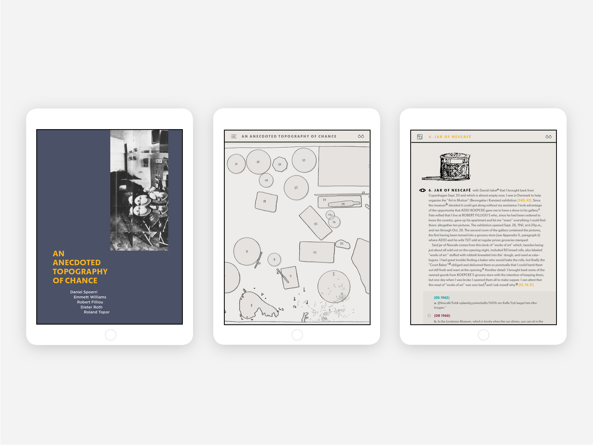
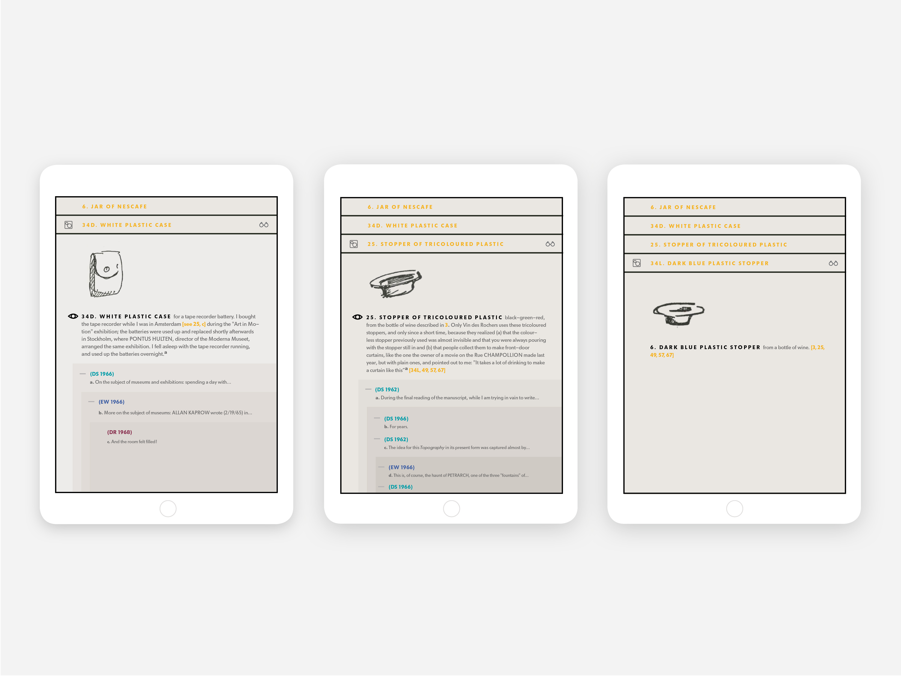
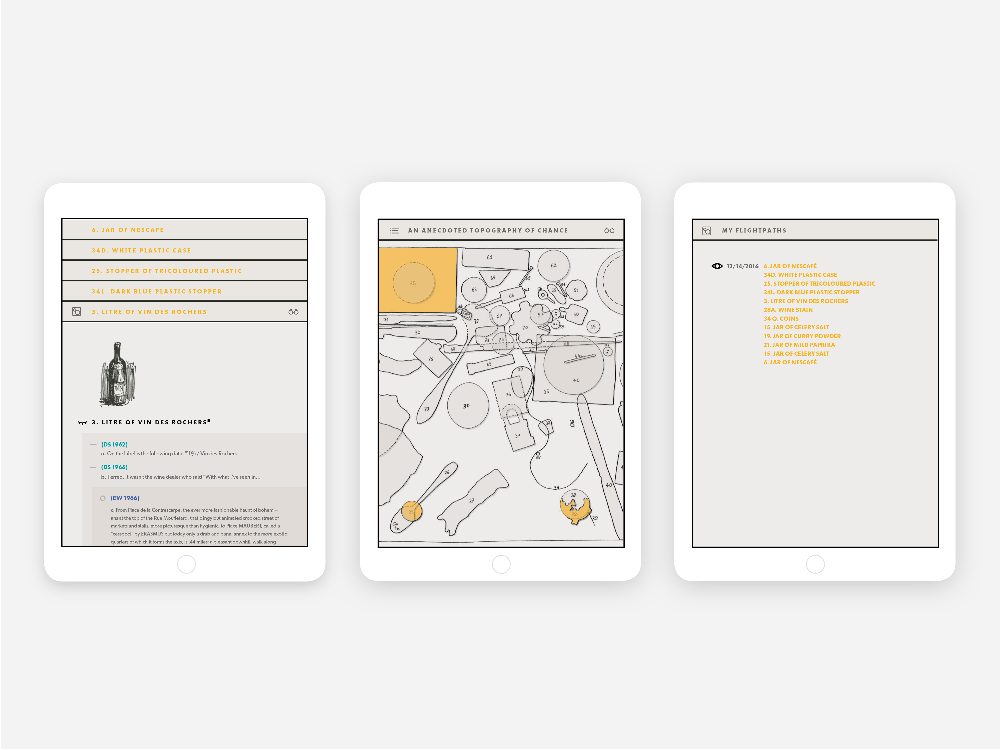

Book App
Elevating and rethinking an ebook experience
The Story
An Anecdoted Topography of Chance is a book that was started by Daniel Spoerri. The book’s anatomy is made up of anecdotes on 80 objects that on October 17, 1961 at 3:47 p.m., by chance, happened to be on the table at the Hotel Carcassone in Paris. Every anecdote on an object, such as Jar of Nescafe, contains memories, associations, and connections by the authors. It comprises of the original anecdotes by Spoerri that were later appended by four other artists associated with the Fluxus movement, including Robert Filliou, Emmett Williams, Dieter Roth, and Roland Topor. The first edition was published in 1966, and several editions have been printed since then, including the most recent one in 2016.
MISSION POSSIBLE
…
The method of anecdotes giving rise to more annotations is elegant, absurd, humorous, and serious. We aimed to celebrate the ongoing legacy and capture the spirit of the book while presenting the content in the most palatable way.
The Challenge
GOAL
✔ To provide a clear composition for the reader by organizing content in a way that is effortless for the viewer to travel from section to section
MAJOR CONSIDERATIONS
✔ To create a convenient nonlinear reading experience that sprouts from the object chosen on the map such that the trajectories of traveling from object to object are organic
✔ Highlight the accordion nature of the book by using the hide/show feature for each annotation so that users get a clear view of the structure and read deeper into the sections they choose
✔ Organize the relationships among different sections in the book, so it is easy for users to find the sections they want as well as to view their reading paths
- 
- 
- 
Pick An Object, Any Object
Tapping on a object on the table leads to its section.
Organize the relationships among different sections in the book, so it is easy for users to find the sections they want as well as to view their reading paths.
Accordion Structure
Layers of annotations open and close for customized organization.
Organize the relationships among different sections in the book, so it is easy for users to find the sections they want as well as to view their reading paths